เมนูสุ่มวันนี้
ให้เราเลือกให้คุณ
กดปุ่มเพื่อสุ่มเมนูเด็ดวันนี้!
เมนูแนะนำ
คัดสรรอาหารไทยขึ้นชื่อ
ตั้งแต่ของคาวจัดจ้านไปจนถึงของหวานหอมหวาน

ต้มยำกุ้ง
ต้ม • เผ็ดเปรี้ยวซุปรสเปรี้ยวเผ็ดจัดจ้าน หอมตะไคร้ ใบมะกรูด และข่า ใส่กุ้งแม่น้ำตัวโต เป็นเอกลักษณ์ของไทยที่โด่งดังไปทั่วโลก
ดูส่วนประกอบ →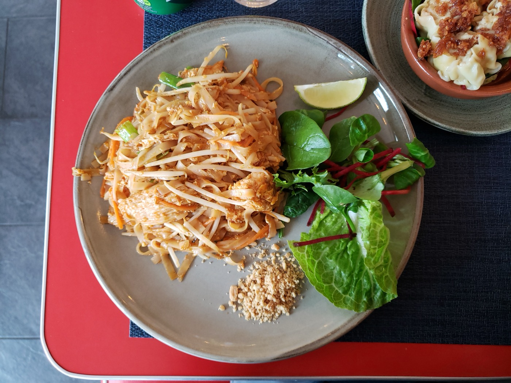
ผัดไทย
ผัด • เปรี้ยวหวานเส้นจันท์ผัดกับไข่ เต้าหู้ กุ้งแห้ง ถั่วงอก ปรุงรสเปรี้ยวหวานเค็มกลมกล่อม โรยถั่วลิสงบดและมะนาว
ดูส่วนประกอบ →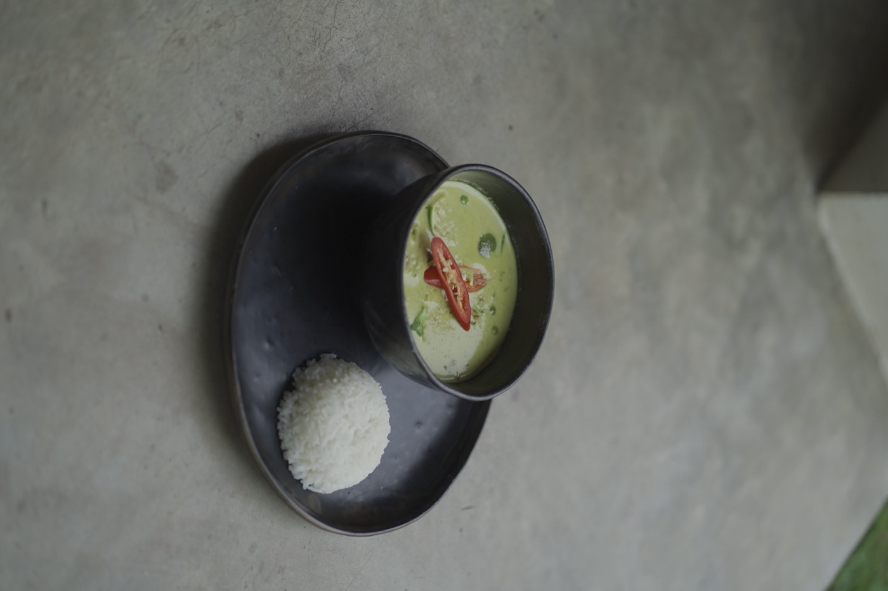
แกงเขียวหวาน
แกง • เผ็ดกะทิแกงกะทิรสเผ็ดหอมเครื่องแกงเขียว ใส่เนื้อไก่หรือลูกชิ้นปลา มะเขือเปราะ และใบโหระพา หอมมันกลมกล่อม
ดูส่วนประกอบ →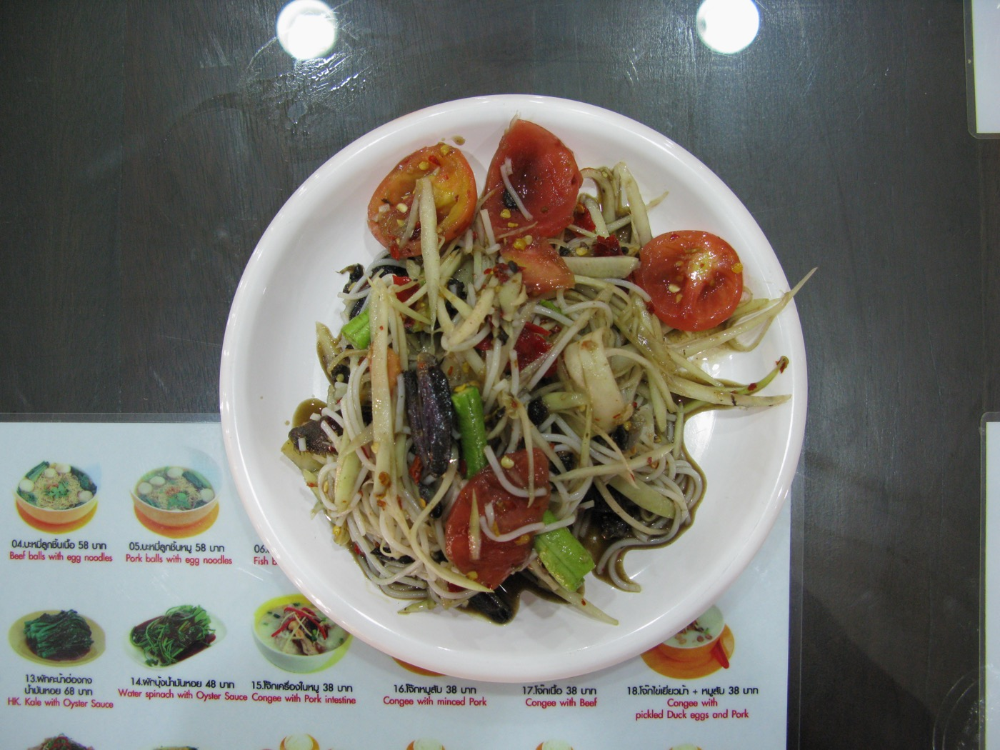
ส้มตำ
ยำ • เผ็ดจัดมะละกอเขียวสับผสมมะเขือเทศ ถั่วฝักยาว ปรุงรสเปรี้ยวเผ็ดเค็มหวานจัดจ้าน กินคู่กับข้าวเหนียวและไก่ย่าง
ดูส่วนประกอบ →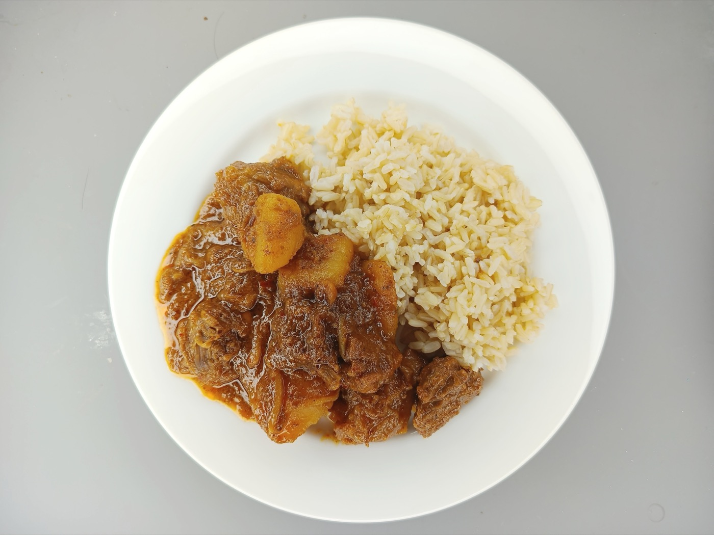
มัสมั่น
แกง • หวานมันแกงกะทิรสหวานมันออกเปรี้ยวนิดๆ ใส่เนื้อหรือไก่ตุ๋นนุ่ม มันฝรั่ง ถั่วลิสง หอมเครื่องเทศ เคยติดอันดับอาหารอร่อยที่สุดในโลก
ดูส่วนประกอบ →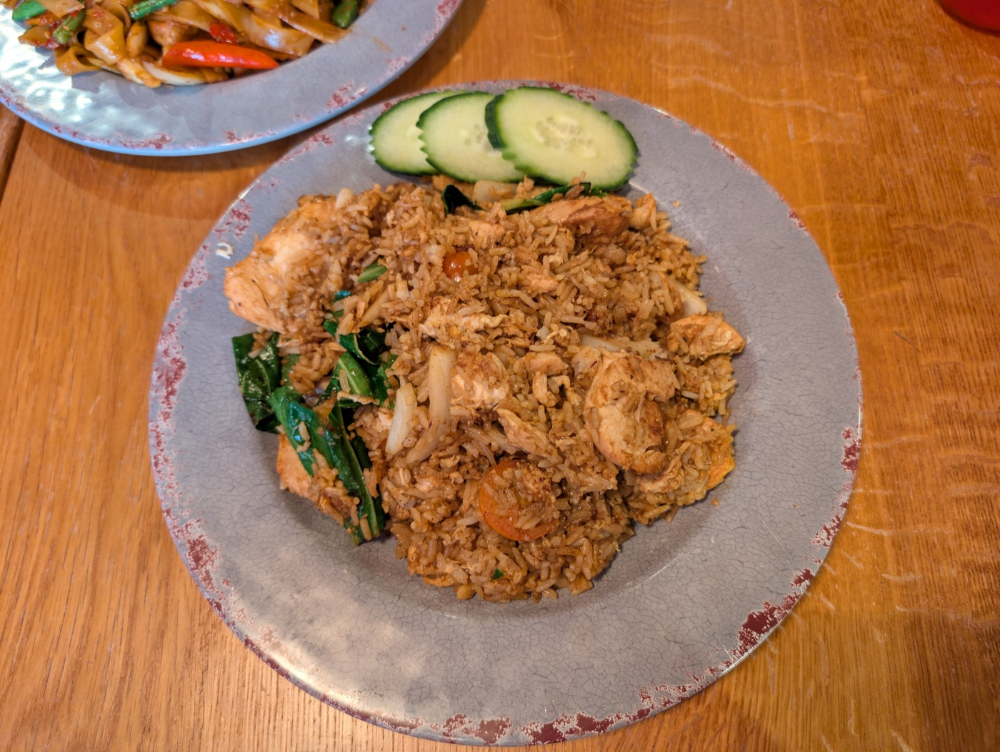
ข้าวผัด
ผัด • เค็มกลมกล่อมข้าวผัดกับไข่ หอมใหญ่ และเนื้อสัตว์ตามชอบ ปรุงรสง่ายๆ แต่หอมกลิ่นกระทะร้อน กินคู่กับแตงกวาและมะนาว
ดูส่วนประกอบ →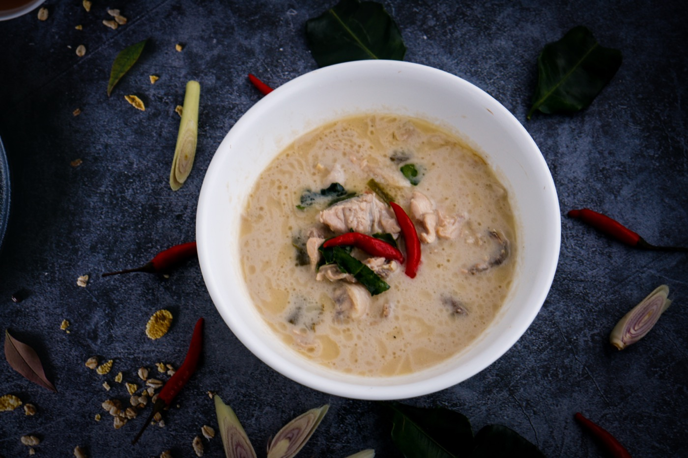
ต้มข่าไก่
ต้ม • หอมกะทิซุปกะทิหอมข่า ตะไคร้ ใบมะกรูด รสเปรี้ยวเผ็ดนุ่มนวลกว่าต้มยำ เนื้อสัมผัสข้นมันจากกะทิ
ดูส่วนประกอบ →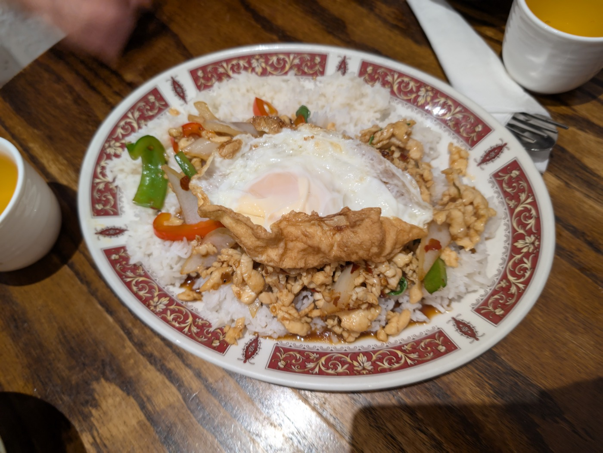
ผัดกะเพรา
ผัด • เผ็ดร้อนผัดเนื้อสับหรือหมูสับกับใบกะเพราและพริก รสเผ็ดร้อนจัดจ้าน กินคู่ข้าวสวยร้อนๆ และไข่ดาว เมนูโปรดของคนไทยทุกวัย
ดูส่วนประกอบ →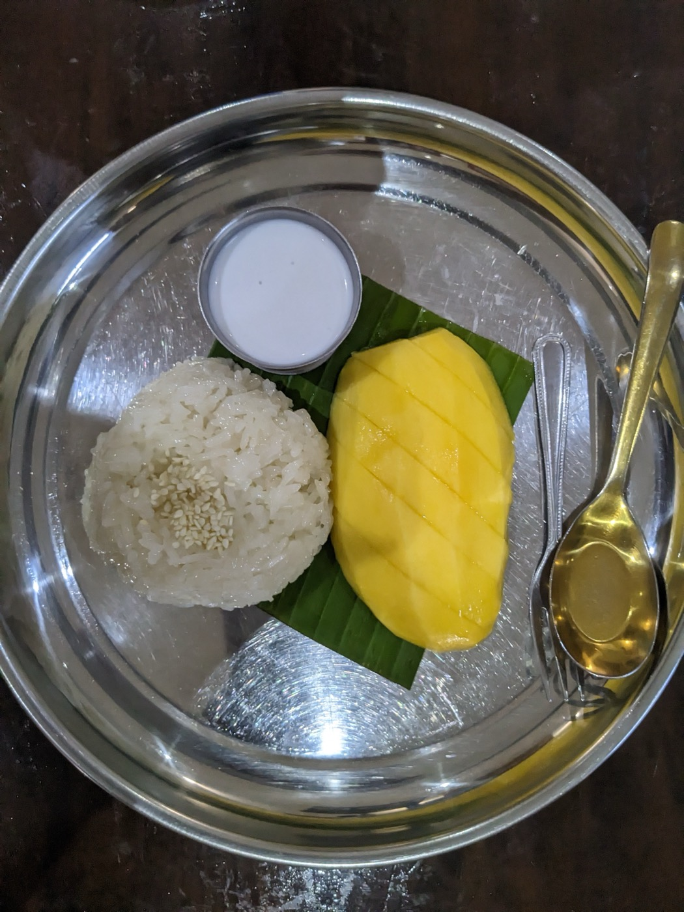
ข้าวเหนียวมะม่วง
ของหวาน • หวานมันข้าวเหนียวมูนหอมกะทิ เคียงมะม่วงสุกหวานฉ่ำ ราดหน้าด้วยกะทิข้นๆ ของหวานไทยที่ชาวต่างชาติหลงรัก
ดูส่วนประกอบ →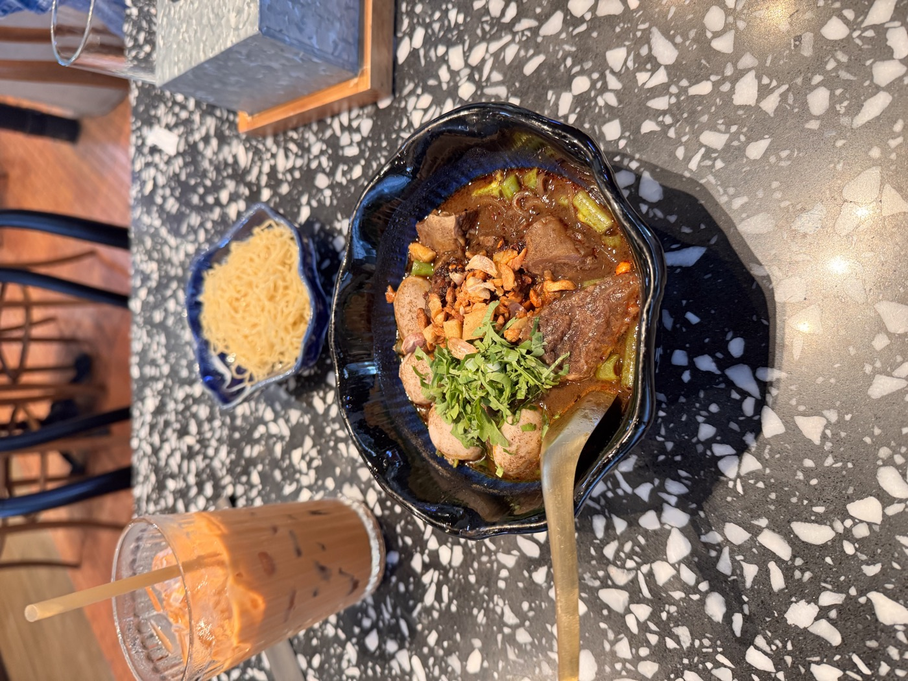
ก๋วยเตี๋ยวเรือ
ต้ม • เข้มข้นสมุนไพรก๋วยเตี๋ยวน้ำซุปเข้มข้นสีเข้มจากเลือดหมู หอมเครื่องเทศและสมุนไพรไทยกลิ่นจัด เสิร์ฟเป็นถ้วยเล็กรสจัดจ้าน เป็นเอกลักษณ์ของก๋วยเตี๋ยวริมคลอง
ดูส่วนประกอบ →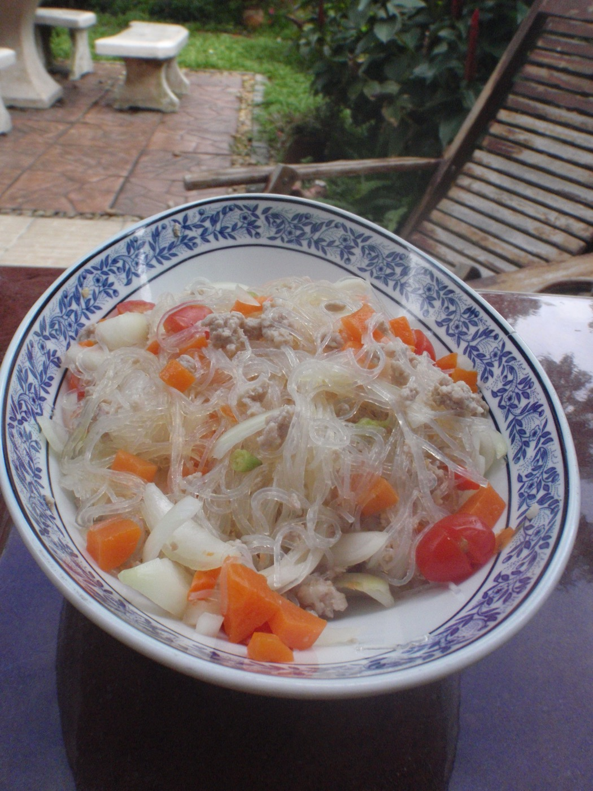
ยำวุ้นเส้น
ยำ • เปรี้ยวเผ็ดจัดจ้านวุ้นเส้นลวกยำกับกุ้งสดและหมูสับ ใส่เห็ดหูหนูและมะเขือเทศ ปรุงรสเปรี้ยวเผ็ดแซ่บกลมกล่อม เป็นยำยอดนิยมของคนไทยทุกวัย
ดูส่วนประกอบ →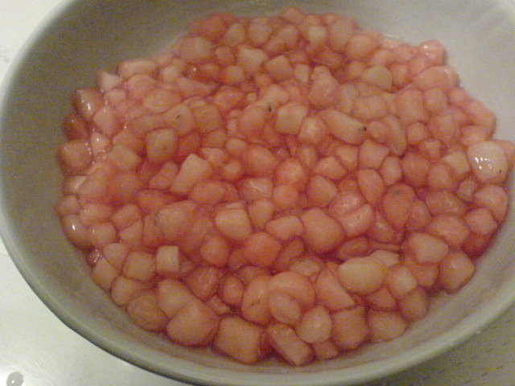
ทับทิมกรอบ
ของหวาน • หวานเย็นสดชื่นแห้วเชื่อมคลุกแป้งสีแดงสดใสคล้ายทับทิม ราดด้วยกะทิสดหอมมันและน้ำแข็งไส หวานเย็นชื่นใจเหมาะกับหน้าร้อน
ดูส่วนประกอบ →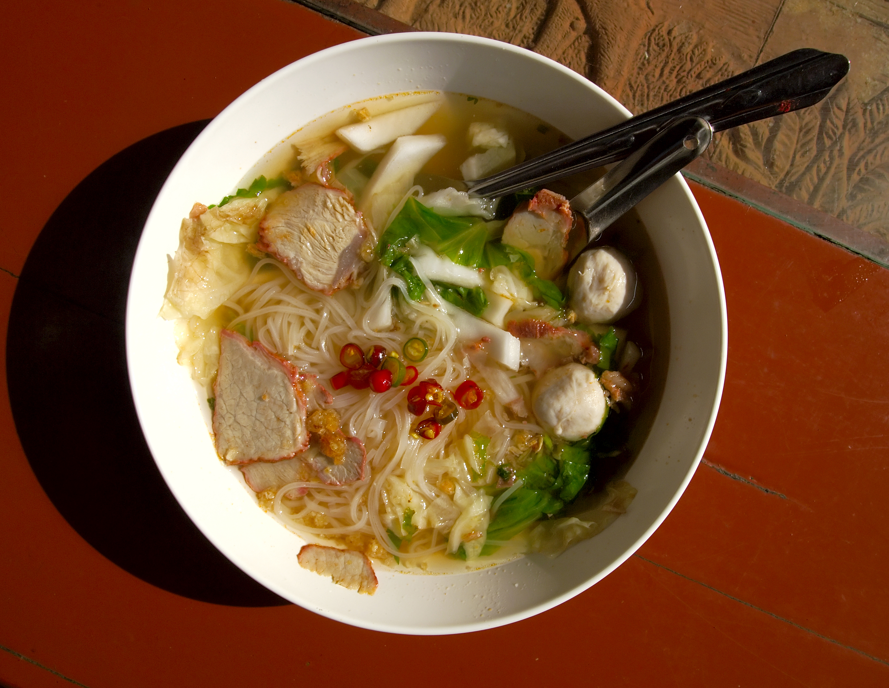
บะหมี่
ต้ม • หอมน้ำซุปกระดูกหมูเส้นบะหมี่เหนียวนุ่มลวกในน้ำซุปกระดูกหมูหอมกระเทียมเจียว ใส่หมูแดง ลูกชิ้น และผักกาดดอง รสกลมกล่อมอุ่นท้อง เป็นอาหารเช้าหรือมื้อเบาที่คนไทยกินกันทุกวัน
ดูส่วนประกอบ →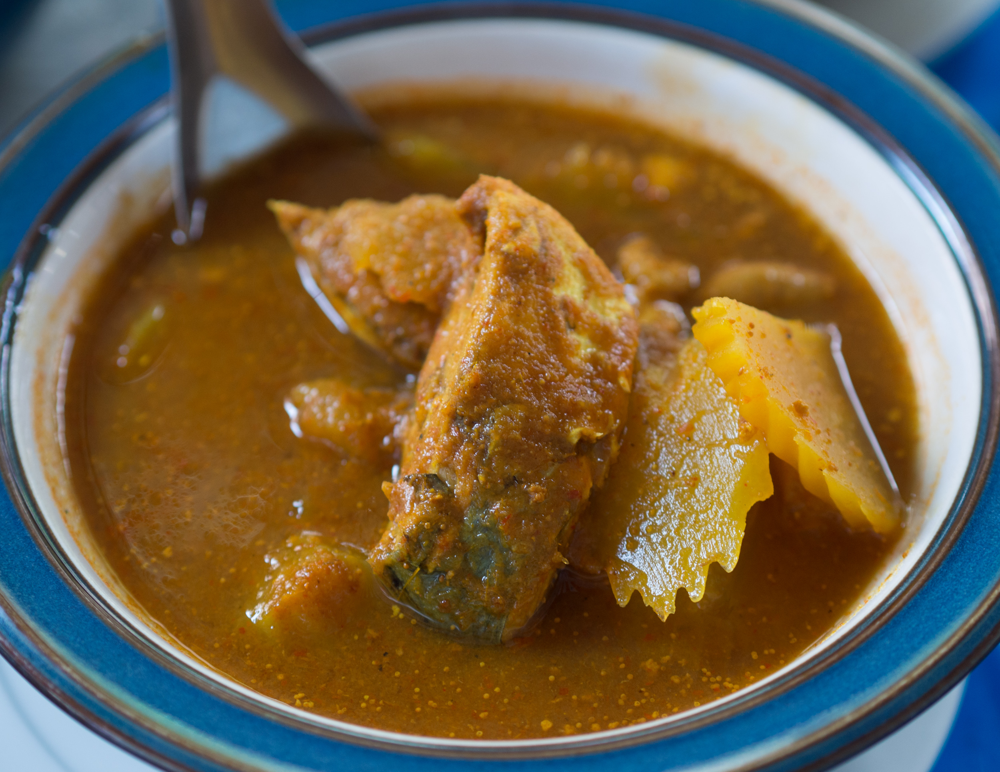
แกงส้ม
แกง • เปรี้ยวเผ็ดจัดแกงรสเปรี้ยวเผ็ดจัดจ้านจากพริกแกงส้มและมะขามเปียก ใส่ปลาหรือกุ้งสด ผักรวมอย่างผักบุ้งและมะละกอ กินคู่ข้าวสวยร้อนๆ ให้รสชาติจัดจ้านถึงเครื่อง
ดูส่วนประกอบ →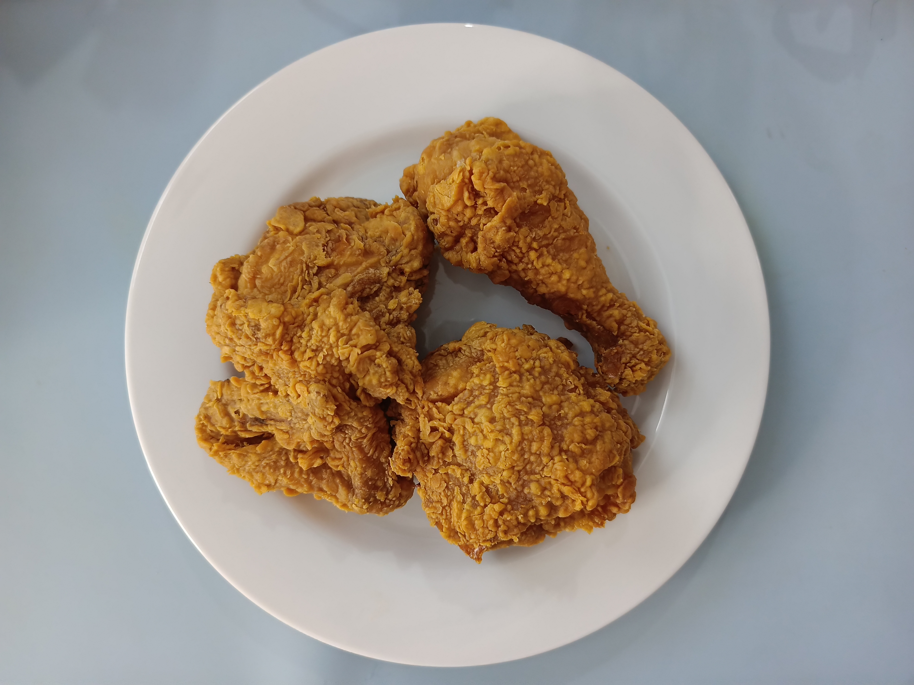
ไก่ทอด
ทอด • กรอบนอกนุ่มในไก่ชิ้นหมักเครื่องเทศและกระเทียมพริกไทยจนหอมซึม ทอดจนผิวกรอบเหลืองทองเนื้อในนุ่มฉ่ำ กินคู่น้ำจิ้มไทยและข้าวเหนียว เป็นเมนูโปรดของคนไทยทุกวัย
ดูส่วนประกอบ →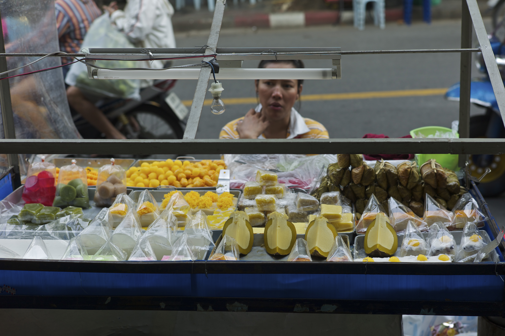
ขนมหม้อแกง
ของหวาน • หวานมันหอมไข่ขนมไทยโบราณเนื้อเนียนหอมไข่และกะทิ อบจนหน้าเป็นสีน้ำตาลทองกรอบบาง เนื้อด้านในนุ่มหวานมัน โรยหน้าด้วยหอมเจียว เป็นของหวานที่อยู่คู่ครัวไทยมานาน
ดูส่วนประกอบ →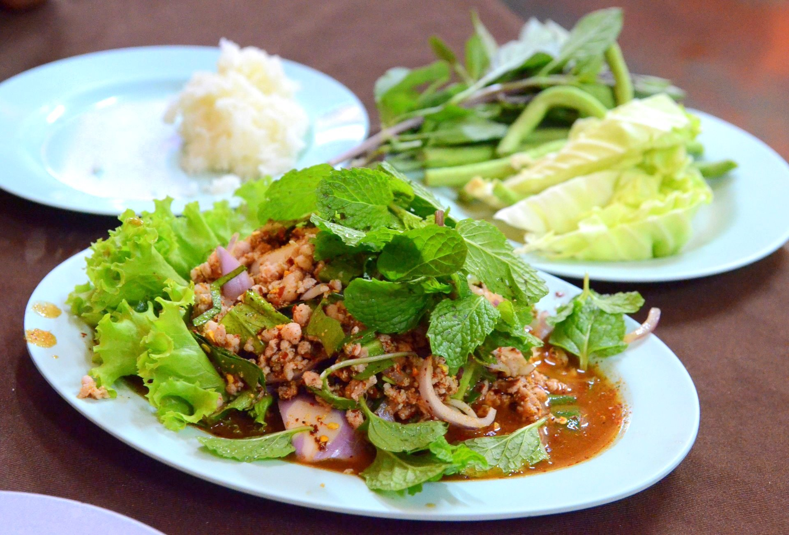
ลาบ
ยำ • เผ็ดจัดสมุนไพรหมูสับลวกคลุกข้าวคั่วป่นหอมกรุ่น ปรุงรสเปรี้ยวเผ็ดเค็มจากมะนาวและพริกป่น ใส่หอมแดงและใบสะระแหน่ กินคู่ผักสดและข้าวเหนียว เป็นเมนูเด่นของอาหารอีสาน
ดูส่วนประกอบ →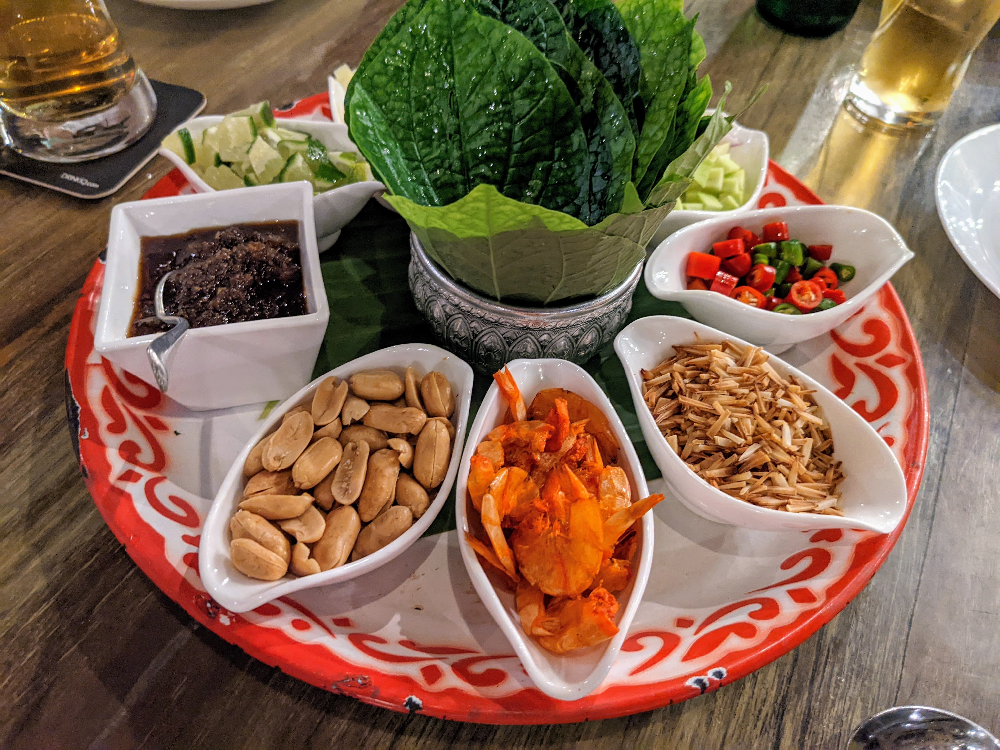
เมี่ยงคำ
ทานเล่น • เปรี้ยวเค็มหวานใบชะพลูห่อเครื่องเคียงหลากรส ทั้งกุ้งแห้ง มะพร้าวคั่ว ขิงซอย และถั่วลิสง ราดด้วยน้ำเมี่ยงรสเข้มข้น กัดคำเดียวได้รสเปรี้ยวเค็มหวานครบในปากเดียว
ดูส่วนประกอบ →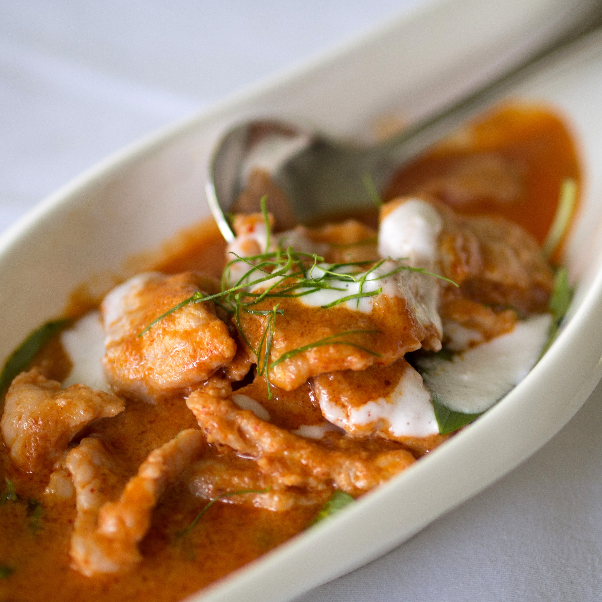
พะแนง
แกง • หวานมันเข้มข้นแกงกะทิข้นรสหวานมันเข้มข้นกว่าแกงเขียวหวาน ใส่เนื้อหมูหรือไก่ตุ๋นนุ่ม โรยหน้าด้วยใบมะกรูดซอยและพริกชี้ฟ้า หอมเครื่องแกงพะแนงเข้มข้นถึงรส
ดูส่วนประกอบ →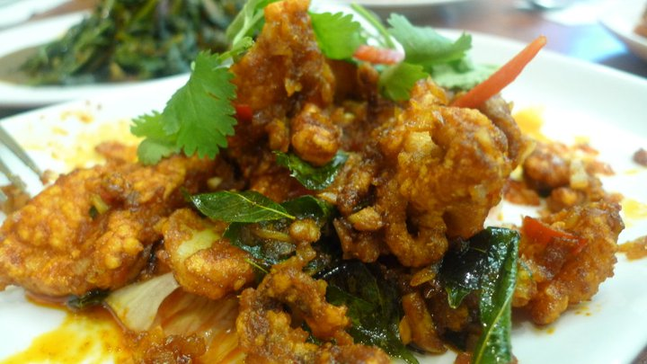
ปลาหมึกทอด
ทอด • กรอบนอกนุ่มในปลาหมึกสดหั่นชิ้นชุบแป้งทอดกรอบจนเหลืองทอง เนื้อในยังนุ่มหวาน กินคู่น้ำจิ้มซีฟู้ดรสเปรี้ยวเผ็ดจัดจ้านและมะนาว เป็นของว่างยอดนิยมริมทะเล
ดูส่วนประกอบ →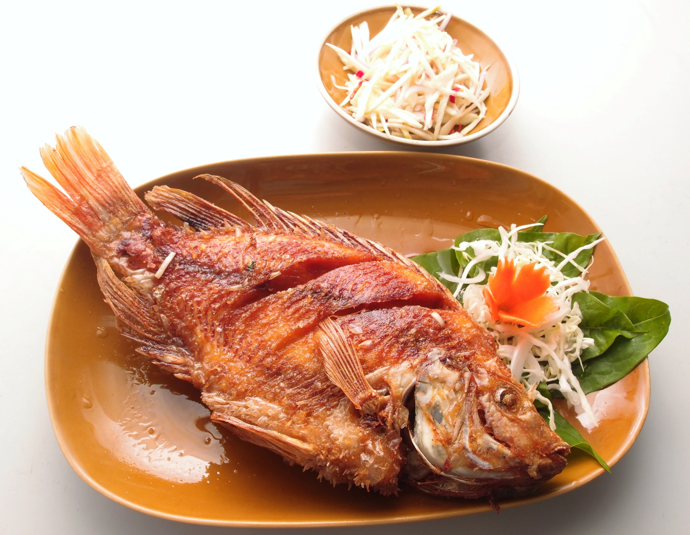
ปลาทอด
ทอด • กรอบนอกฉ่ำในปลาทั้งตัวทอดจนผิวกรอบเหลืองทอง เนื้อในยังฉ่ำนุ่ม หอมกลิ่นกระเทียมและพริกไทย กินคู่มะนาวและน้ำปลาพริก เมนูอาหารทะเลแบบไทยแท้ที่ทำง่ายได้ทุกบ้าน
ดูส่วนประกอบ →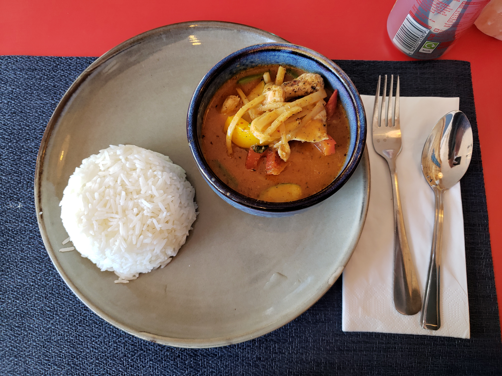
แกงเผ็ด
แกง • เผ็ดร้อนกะทิแกงกะทิรสเผ็ดร้อนจากพริกแกงแดง ใส่เนื้อไก่หรือหมู มะเขือเปราะ และใบโหระพา กลิ่นหอมฉุนของพริกแกงเข้มข้นถึงเครื่อง เผ็ดร้อนกำลังดีคู่ข้าวสวย
ดูส่วนประกอบ →
สะเต๊ะ
ทอด • หอมย่างเครื่องเทศเนื้อหมูหรือไก่หมักเครื่องเทศหอมขมิ้น เสียบไม้ย่างจนสุกหอมกรุ่น กินคู่น้ำจิ้มถั่วลิสงข้นๆ และอาจาด เป็นของว่างริมทางยอดนิยมของคนไทย
ดูส่วนประกอบ →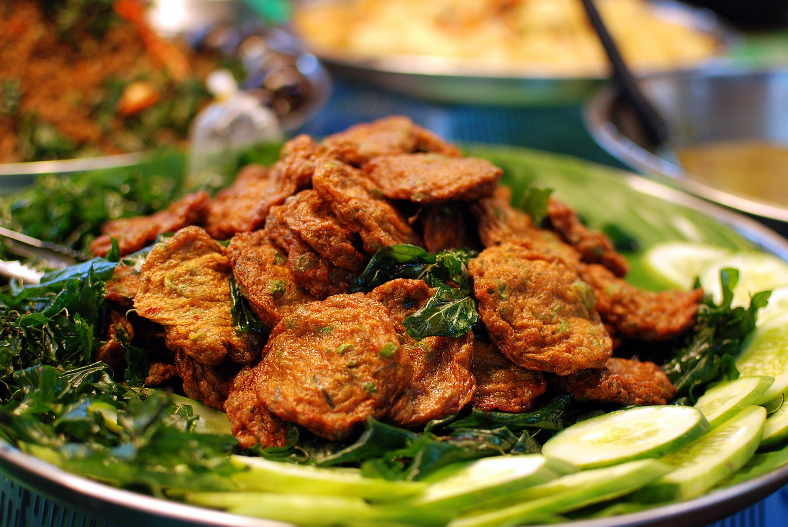
ทอดมันปลา
ทอด • เผ็ดกรอบเหนียวนุ่มปลาสดสับผสมพริกแกงแดงและถั่วฝักยาวซอย นวดจนเหนียวก่อนทอดให้กรอบนอกเหนียวนุ่มใน กินคู่น้ำจิ้มอาจาดแตงกวารสเปรี้ยวหวาน เป็นของว่างขึ้นชื่อของไทย
ดูส่วนประกอบ →ไม่พบเมนูที่ตรงกับคำค้นหาหรือหมวดหมู่ที่เลือก ลองค้นหาคำอื่นดูนะ 🙏